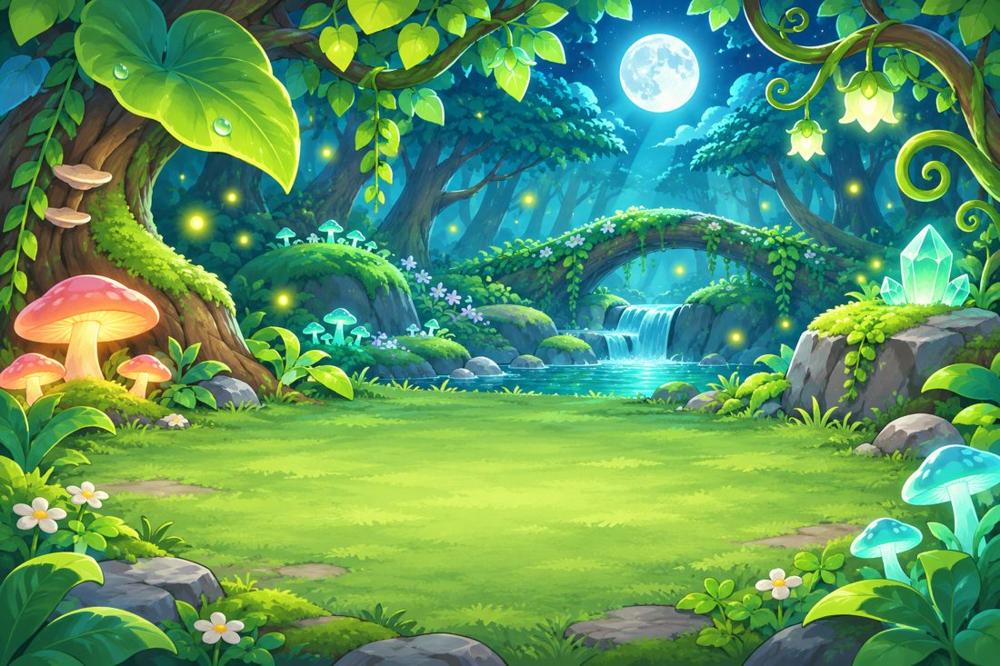

Each land has its own Kimuro, its own weather and its own Guardian.
Azukit got separated from its pack by the tide. Help Azukit get back to them!
Watched over by the Guardian Axon.

Veldfawn lost its herd among the glowing trees. Help Veldfawn find its friends!
Watched over by the Guardian Akilla.
Fluttox got blown away from its flock by a big gust. Help Fluttox fly home!
Watched over by the Guardian Jack.